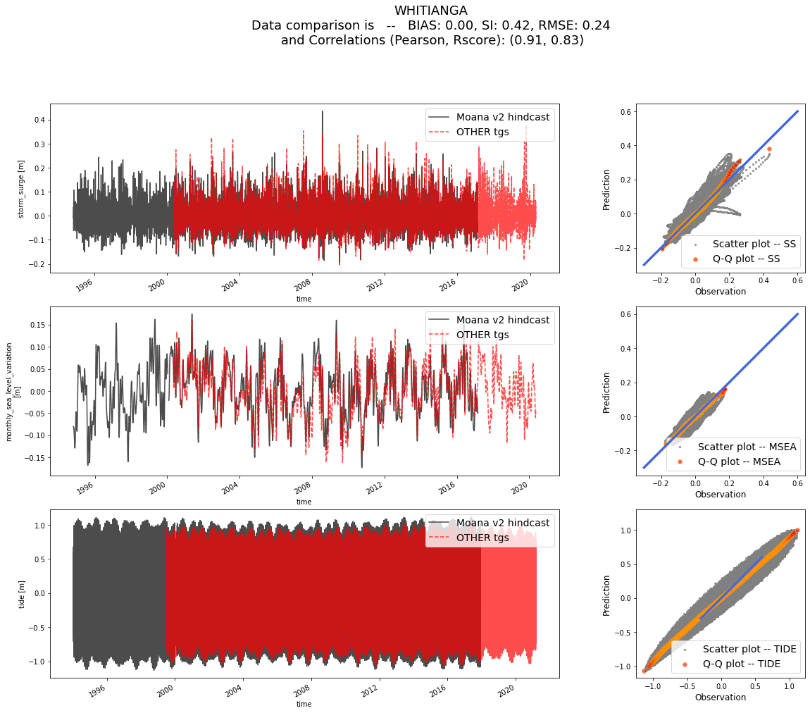
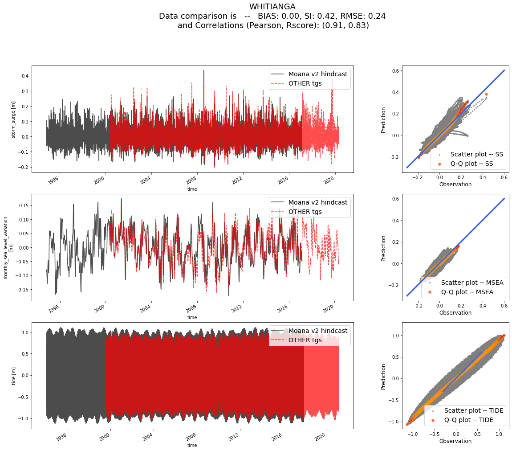
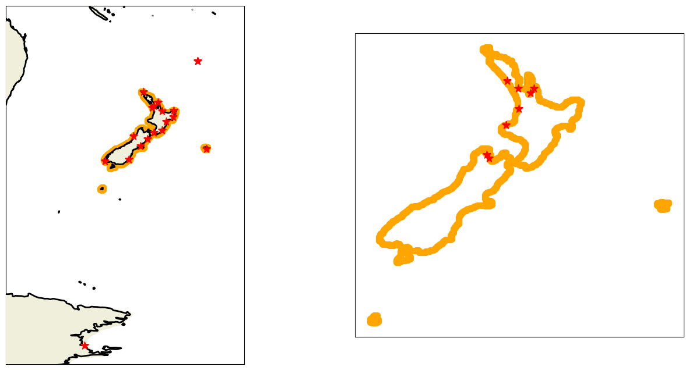

LINZ and OTHER data analysis
4. LINZ and OTHER data analysis#
Here we will see the behaviour of the “extra” tidal gauges real observations measurements. Below we can see an image where the tgs locations are plotted:
{kind=link}
Fig. 4.1 These are the locations of both the LINZ and the OTHER tidal gauges#
all the LINZ and OTHER datasets are hosted in the storm_surge_data GitHub repository!!
# basic
import os
import numpy as np
import pandas as pd
import xarray as xr
# plotting
import matplotlib.pyplot as plt
import cartopy.crs as ccrs
# append sscode to path
import sys
sys.path.insert(0, '/Users/administrador/Documents/geocean-nz-ss')
data_path = '/Volumes/ToshibaJT/geocean-nz-ss/data'
os.environ["SSURGE_DATA_PATH"] = data_path
from sscode.data import Loader
from sscode.plotting.utils import plot_ccrs_nz
DATA PATH /home/javitausia/Documentos/geocean-nz-ss/data
# load and validate, do not pay attention to the pressure
loader_linz = Loader(data_to_load=['cfsr_','moana','linz'])
loader_linz.validate_datasets(
comparison_variables=[['ss','msea','tide'],['ss','msea','tide']]
)
data not available for this predictor!!
loading and plotting the LINZ tidal guages...

Lets compare data in Moana v2 hindcast with LINZ tgs!!
TGs to analyze are:
['GBIT' 'CHIT' 'TAUT' 'CPIT' 'CHST' 'SUMT' 'NCPT' 'AUCT' 'KAIT' 'PUYT'
'MNKT' 'GIST' 'WLGT' 'NAPT' 'OTAT' 'LOTT']
which correspond to
[1296, 378, 1124, 780, 613, 488, 1442, 1217, 578, 200, 1177, 1025, 689, 949, 224, 1146]
in Moana v2 hindcast
calculated min distances (km) in Moana v2 hindcast to LINZ tgs:
[5.319717747423619, 2.3184720501332547, 4.698606345256596, 4.106133965791918, 3.130787770409219, 17.988003692172256, 1.2755996354300678, 5.878134710491162, 2.1041482521719543, 4.015667223502896, 3.1685862316040065, 5.3741308824231755, 10.09186164411121, 1.8956937268750171, 9.621120849018142, 4.625968007830678]
# load and validate, do not pay attention to the pressure
loader_linz_2 = Loader(data_to_load=['cfsr_','dac','linz'])
loader_linz_2.validate_datasets(
comparison_variables=[['ss'],['ss']]
)
data not available for this predictor!!
loading the DAC hindcast data...
loading and plotting the LINZ tidal guages...
Lets compare data in DAC global reanalysis with LINZ tgs!!
TGs to analyze are:
['GBIT' 'TAUT' 'CPIT' 'CHST' 'SUMT' 'NCPT' 'AUCT' 'KAIT' 'PUYT' 'MNKT'
'GIST' 'WLGT' 'NAPT' 'OTAT' 'LOTT']
which correspond to
[6757, 6034, 4461, 3958, 3236, 7594, 6512, 3725, 2002, 6390, 5557, 4334, 5190, 2140, 6163]
in DAC global reanalysis
calculated min distances (km) in DAC global reanalysis to LINZ tgs:
[7.590038497049444, 12.57385829711142, 9.75774366494515, 12.41903418316871, 9.068172766589313, 10.389226310537907, 9.670289852849752, 10.19706091699214, 11.242251656455334, 5.728641373521477, 9.756618650072202, 4.591126900858283, 7.4684362429430315, 11.268854883263696, 9.26984591158987]
# load and validate, do not pay attention to the pressure
loader_other = Loader(data_to_load=['cfsr_','moana','other'])
loader_other.validate_datasets(
comparison_variables=[['ss','msea','tide'],['ss','msea','tide']]
)
data not available for this predictor!!
loading and plotting the OTHER tidal guages...
Lets compare data in Moana v2 hindcast with OTHER tgs!!
TGs to analyze are:
['Thames' 'PoutoPoint' 'QueensWharf' 'LittleKaiteriteri' 'Kawhia'
'Whitianga' 'Tarakohe' 'PortTaranaki']
which correspond to
[1174, 1260, 1217, 744, 1064, 1214, 803, 999]
in Moana v2 hindcast
calculated min distances (km) in Moana v2 hindcast to OTHER tgs:
[3.7511034902355367, 5.482027490429699, 7.339363979701588, 3.61934770475301, 6.561342239106438, 11.820307701397114, 5.095093595142064, 1.28643175849521]

 

# plot tg new locations
fig, axes = plt.subplots(ncols=2,figsize=(16,8),subplot_kw={
'projection':ccrs.PlateCarree(central_longitude=180)
})
for iload,loader in enumerate([loader_linz,loader_other]):
axes[iload].scatter(
loader.predictand.lon.values,
loader.predictand.lat.values,
transform=ccrs.PlateCarree(),
c='orange',s=50
)
axes[iload].scatter(
loader.validator.longitude.values,
loader.validator.latitude.values,
transform=ccrs.PlateCarree(),zorder=200,
s=100,c='red',marker='*'
)
plot_ccrs_nz([axes[0]],plot_region=(True,(150,190,-20,-80)),plot_labels=(False,None,None))
plot_ccrs_nz([axes[1]],plot_region=(True,(170,178,-34,-44)),plot_labels=(False,None,None))
axes[0].set_facecolor('lightblue'), axes[1].set_facecolor('lightblue')
axes[0].set_title('LINZ'), axes[1].set_title('OTHER')

(Text(0.5, 1.0, 'LINZ'), Text(0.5, 1.0, 'OTHER'))